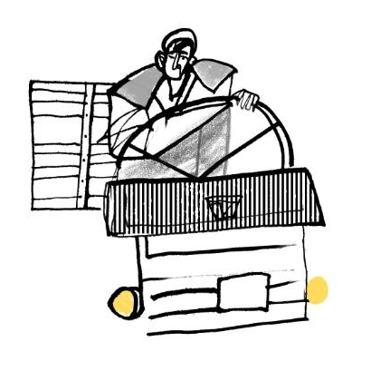
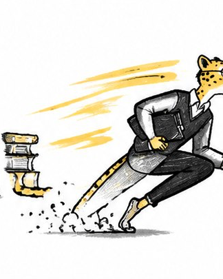

Не прекращаю удивляться, как на меня повлиял Адлер. Хотя, казалось бы, основная работа (в нашем глубоко интеллектуальном сообществе) идет над другим документом и другой темой.
Видимо, попал во что-то свое.
Ну да, совершенно точно, туда и попал.
По Адлеру работа с текстом происходит три раза, которые при наличии навыка можно уложить в одно прочтение. А можно и не укладывать, пока тренируешься. Из развлекательно-познавательного взгляда на чтение звучит странно, ничего себе, три раза одно и то же, да еще и подряд. Но при чтении для понимания выглядит на самом деле норм. Многие книги я так и читал: один раз «обычно», делая максимум заметки в дороге. Второй раз — уже бегая по страницам в разных направлениях, собирая что-то общее и рисуя схемы.
Три вида чтения такие и есть:
- аналитический, от общего к частному, где нужно понять и ответить себе на вопросы вида «о чем книга», «какую задачу ставил перед собой автор» и тд.
- синтетический, от частного к общему, где рассматриваешь отдельные мысли, аргументы и утверждения автора.
- и критический. Он стоит отдельно от первых двух, потому что требует успешного их прохождения. Согл не согл, поч и тд.
Тут главное не впасть в критический сразу, довольно распространенная позиция, симптомы которой я наблюдаю порой и в себе: КГ/АМ, сейчас расскажу, как надо было. Совершенно дурной подход, такое надо из себя изгонять. Сначала понять, потом критиковать.
Но я вообще-то не об этом.
Отвез Диану в школу, по пути дежурно заехал за кофе, и пока ждал, осенило (осень же): а ведь как красиво можно смотреть на себя в ситуации, как на материал: одновременно сверху, как на систему, и снизу, как на набор позиций и их мотивации, действия. А, рассмотрев (считай, поделав ситанализ), можно что-то продуктивно покритиковать.
А покритиковав, принять какие-то управленческие решения, и разбить на задачи. Или не принимать, если нет ясности, а выделить проблемы, и уже углубиться в них по той же схеме. Я обещал себе писать проще, но не знаю, как проще про эти фракталы шести ядер. Вроде и так понятно😄
Но это еще не всё😄
Есть хорошая традиция — сделал работу, сделай и доклад. Нет доклада — нет работы. А чтобы сделать доклад, нужна схема. Нет схемы — нет доклада.
Сперва мне это казалось просто правилом, постепенно, с обрастанием этой конструкции материалом, стало понятно, почему.
Недавно об этом писал:
Понимание можно описать как создание структуры. Если еще проще — дополнительных ячеек, полок стеллажа, куда можно сложить информацию.
Сначала структура, смысл — потом подробности и детали.
Доведя этот подход до определенного автоматизма (если не срубила лень, обычное дело), понимаешь, что поделиться пониманием, даже на высоком уровне — это сделать пересказ. А пересказ это здорово и полезно, но мало и скучно.
Дальше в жизни появились артефакты. Я не сам, если что, это все Орлов, за что ему поклон в пол. Артефакты — это материальный след, схема и доклад тоже артефакт, но гораздо прикольней, когда это какой-нибудь инструмент или продукт. Так, чтобы его мог взять другой, что-то с ним поделать, и что-то получить. Он может быть для «другого» себя, вроде action plan. А может быть для других, не знаю, книга, курс, новый процесс в своем бизнесе, прибор какой-нибудь диагностический.
Артефакты делать сложней, но интересней. Нужно выйти за пределы материала и, связав его с чем-то еще — тут каждый решает, что ему интересно — создать новое.
Даже если не уникальное на земле, то совершенно точно уникальное для тебя, и это сильно отличается от модели «прочел - попробовал - повторил».
А у меня есть мощнейший зуд на верификацию. Мне обязательно нужно верить в то, что спроектированный процесс приведет к заданным результатам.
Нет, нет, не совсем так. Все так хотят и делают. Но часто видел, что людям достаточно уверенности внутри, и при нулевой обратной связи и встречном интересе, делается вывод: они не поняли. То есть, перенос ответственности за работу артефакта на получателя.
Да что видел, самого кидало из одной крайности в другую.
А хочется, чтобы работало. Вот и рою туда, чтобы и я доделывал — упрощал, «продавал», проектировал не только инструмент, но и интерес получателя, его выгоду. И понимание учитывал, чтобы лучше объяснить, ласковей подойти.
Что-то банальное, но постоянно упускаемое.
Короче, то же в ситуации, как на материал: одновременно сверху, как на систему, и снизу, как на набор позиций и их мотивации, действия. А, рассмотрев (считай, поделав ситанализ), можно что-то продуктивно покритиковать.
И это тоже было еще не все, я только начал😄
Так вот😄
С недавних пор в качестве эксперимента я себе поставил цель — на каждый материал придумывать работающий продукт.
Ничего страшного, если не получилось. Или если придумал, но получилась кривая фигня. Тем более, что это же самые первые пробы, естественно, что только сказочно мыслящий юноша, коим я безусловно был еще недавно, поверит, что с первого раза получится СТАРТАП.
Забавно, что продукты часто придумываются не напрямую связанные с рабочим материалом, а рядом. Вот скилл для Клода, который я сделал — он получился из практики дизайна исследования. То есть, стояла задача, было дано направление, мы (на игре и по домам) пробовали одновременно делать и понимать — кто в теме, тот в теме, как говорится.
Так вот. Скилл получился из понимания, как можно из большого объема имеющегося материала собрать систему, работающую на заданных основаниях.
Потом что-то не получалось. Например, пытался собрать оптику, сканирующую материал на предмет ценностей. Сложность в том, что большинство декларируемых ценностей — фиктивные. А большинство настоящих — имплицитны. То есть, уровень исследования (я не претендовал и не планирую на научный труд, это обычный труд) должен быть таким, чтобы считывать тонкие сигналы и какие-то там паттерны. Не вывез, взорвался, короче.
А при чтении Адлера я, естественно, очень вдохновился той печальной мыслью, что мы не просто мало читаем, а вообще-то и не умеем читать так, чтобы использовать великие труды по назначению — для знаний.
Вдохновился — не значит поверил. Все тексты прошлых дней как раз об этом: я лично по себе знаю, что это значит. Если бы мне в 20 лет посеяли навык, который посеяли в 40 — а он обычный, тут нет ничего заоблачного — я бы точно многое увидел более адекватно и широко.
Хочется сказать «был бы умней», но это заглушка. Я имею в виду, что смог бы лучше понимать мир, и следовательно принимать побольше хороших решений, поменьше плохих, лучше бы распорядился своими умениями и талантами — короче, был бы поумней, точно.
И вот смотрю я на Адлера, схемы и заметки, что набрасываю при прочтении, и думаю: тут все очень просто. Что из него вытащить? Метод?
Так очень просто: вот тебе 10 правил — делай.
И ведь дай мне их в 20, я бы может и поделал 15 минут, да забросил. Дай другому в 40, без моего бэкграунда чтения, где часть навыка образовалась автоматически, из искреннего любопытства — получится примерно то же.
Потому что я непроходимо тупой, не готов, занят гормонами? Потому что кто-то непроходимо тупой, не готов, занят проблемами?
Конечно да.
Но ведь у каждого из нас, что в 20, что в 40 есть еще и внешние обстоятельства, когда нужно врубиться в сложный материал, и есть немало внешней мотивации, кнутов и пряников — а ты не можешь, даже узнав о правилах, одновременно и в рамках дедлайна, навык обретать и материал понимать.
Дилемма.
Что-то про мотивацию, как будто. Целый отдельный пласт, который требует отдельного исследования.
Поэтому я пошел в другую сторону😄

Пошел я, значит, в другую сторону😄
И думаю:
— А че дети?
Взял у Дианы ее задания по ВПР (не знаю, что это, но все боятся). Смотрю, а там есть задел, ряд вопросов на понимание. Ок, думаю, Адлер тоже писал, что в Америке его лет ХХ века качество чтения от нуля растет, где-то до 5-6 класса, а далее плато — и у большинства на всю жизнь.
То есть, сказку о рыбаке и рыбке ты раскуришь, а Вергилия уже хрен.
Ну и думаю такой: — о!
У детей есть отличная мотивация. Ну, то есть, никакой. Если они в порядке.
Но у них есть родители. Которые, даже не обладая навыками сами, точно хотят детям лучшей доли. Интуитивно. Это я тоже писал, в том смысле, что знаю по себе, и это работает:
И очень важный момент, что на это все не только удача и Божья воля, но и усилия родителей. Мамы, как рисечера и мотиватора. Папы, как опоры и поддержки.
И я такой думаю:
Значит:
- Можно взять Адлера
- Выбрать из его метода то, что подходит для людей 10-14 лет
- Обогатить своим опытом и идеями
- Отобрать тексты, художественные и обязательно не только, которые будут на 1-2 года «старше» с точки зрения школьной программы
- Проработать каждый материал с точки зрения смысла, уж этот-то уровень я гарантированно потяну
- Проработать методологию, чтобы в ней были, помимо анализа и синтеза, возможности для рефлексии и рисования схемок
- И все это пусть ребенок делает сам, а не выбирает правильный вариант из списка
- И всё это пусть требует усилий, но при этом не дает давления, как в школе
- И пусть за это ДЕТЯМ ПЛАТЯТ РОДИТЕЛИ.
Ну и вот, оплатил нейронку пожирней, делаю MVP. Владельцы детей 10-ти лет, кто хочет попробовать, напишите мне, когда доделаю, нужно потестировать.
Я там, конечно, навалил уже и контрольных за призы от партнеров, и отдельный аналитический трек по управлению абузом (попыткой наебать) как незаметный образовательный трек для тех, кому интересней нагнуть систему, чем выполнить задачу, очень ценные люди — но это потом.
Сейчас модель проще некуда: ставишь ставку. Я доче буду предлагать за пятихат. Есть задача, их будет в тестовой версии несколько видов. Задача состоит из текстов и вопросов/заданий к нему. Взял Чехова и Куприна для художки и Перельмана про математику. Кто прошел — получает купон, который обналичивает у родителя. Кто не прошел — не получает. И там есть небольшой круг даунгрейда, который поможет, если не получается, разобрать чуть более детально, а потом все равно вернуться в начало и пройти. Все это проверяет ЛЛМ, что как раз позволяет уйти от правильно/нет, а рассчитать спектр и выделить достаточность выполнения.
Понятия не имею, куда это повернет. Но попробовать хочется.
Зато мне эта идея и не проработка дала понимание, что я давно хотел уйти от мировоззрения больного бизнеса, где юзера целуют в попку, а на самом деле презирают, и хотят выжать из него максимум.
Я хочу делать так, чтобы реально работало, все знали, зачем, а русские дети были самыми умными на земле.
Таким образом, мне видится продукт/инструмент, который:
— Будет достаточно сложным, чтобы поддерживать правило «автор понимает немного лучше тебя»;
— Может быть использован не как замену или исправление ошибок школьной программы, а как дополнительная практика;
Кроме того:
— Учитывая, что детям и родителям хватает уроков, а задачи трудоемкие, предполагаю его использование 2-4 раза в месяц;
— Считаю адекватной бонус за прохождение задачи 500-1000 и более рублей, потому что само усилие, как оно запроектировано, при должном качестве (тут как раз вызов мне как методологу проекта) становится настоящей стратегической инвестицией;
— Безусловно, оно не сможет и не должно заменить работу с живыми преподавателями, родителями и сверстниками в кружках;
— Естественно, повышение качества чтения не должно и не может заменить все остальные виды воспитания и развития;
— Думаю, что допустимо и желательно участие родителей, особенно на первых этапах, особенно в тех случаях, когда не было возможности сидеть с ребенком над уроками литературы, проходя вместе мыслительный путь от материала к его смыслу;
— Есть гипотеза, что успехи в выполнении задач, давая удовольствие от победы, в скором времени будут влиять и на общий интерес к книгам. Для этого к заданиям по отрывкам я сразу прикладываю полный текст произведения в конце;
— Есть опасения, что у ребенка может утвердиться логика «за реальное усилие мне платят», но думаю, что низкая частота итераций может, наоборот, превратить это в предвкушение борьбы за ценность. Зато понятная материальная мотивация избавляет от рисков эффекта давления, где ценой развития для ребенка становится страх не порадовать маму, вытеснив свои ценности;
— К тому же нет необходимости ежедневного или непрерывного пользования инструментом, допустима работа на каникулах, в отпуске и другими «флайтами»;
Вот такой получился проектный документ-манифест. На сегодня я исчерпал свое желание писать мысли. Как только получу работоспособный продукт, поделюсь здесь.
